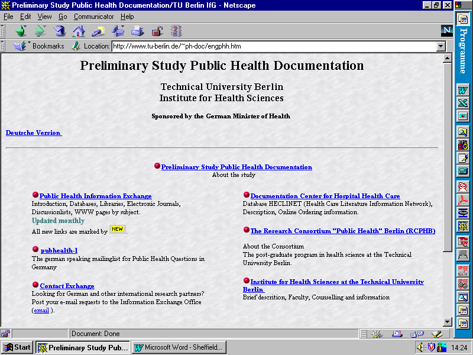
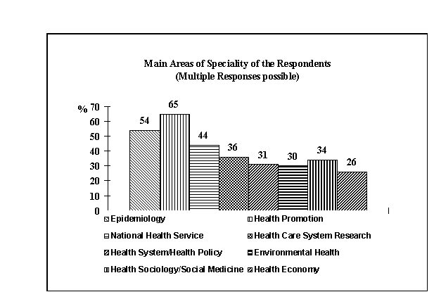

Institute for Health Sciences,
Technical University Berlin, Berlin, Germany
Since Public Health in Germany is a new multidisciplinary area, there is no well established informational infrastructure to offer researchers, as well as other experts, an overview of current research activities and recently published literature. Therefore, a preliminary study is assessing the informational needs in public health research and practice. A survey about the experience with online databases and demands for specific information resources was conducted in order to analyse the extent of problems experienced with information retrieval. The main conclusions of the survey findings are: (a) there is a serious demand for information filtering and information supply in Public Health in Germany, (b) some of the ‘’missed’’ databases do already exist, but are obviously not well known or accessible, thus indicating a need of promoting information resources and (c) although some of the respondents have had access to the Internet, only very few of them are using email or the world wide web to find and exchange information.
After a period of silent activity, public health as a scientific field has re-established itself in Germany over the last few years. Several public health research consortiums have supported researchers from such disciplines as medicine, sociology, psychology and engineering in focusing on the study of the health care system, the epidemiology of various diseases and health conditions, the national health service, and environmental health. At the same time some Schools of Public Health have introduced postgraduate programmes in order to cultivate a specifically educated Public Health community. But nevertheless, Public Health in Germany is still suffering from the lack of a responsible national governmental Public Health organisation (like the NHS or the CDC’s) which would be able to co-ordinate the several activities.
There is also no well established informational infrastructure to offer researchers, as well as other experts, an overview of current research activities and recently published literature. Therefore, a preliminary study based at the Institute for Health Sciences at the Technical University Berlin and funded by the German Ministry of Health is assessing the informational needs in Public Health research and practice. The objectives of the study are to develop a design for a supplementary documentation about Public Health projects in Germany and to identify the benefits of new Internet online procedures for Public Health practice and research. As a first step, an information exchange office (figure 1) began in September 1996 to assess the demand for high-quality information in Public Health research and to evaluate researchers' experiences with the use of databases and other online procedures.

Figure 1.: Home page of the Public Health Information Exchange Office
A survey about the experience with online databases and demands for specific information resources was conducted during August 1996 in order to analyse the extent of problems experienced with information retrieval. A questionnaire, including questions (59 variables) about the main areas of specialty, ordinary information searching strategies, experiences with literature and fact databases, information needs, and technical equipment was developed and sent to 585 key persons.
The response rate was 38% (n=217). Without a special subsample of non-Public Health scientists from the Technical University itself, the response rate increases to 44%.
It can be assumed from comments given by non-respondents that these persons did not identifying themselves as Public Health professionals and thus refused to answer the questionnaire. In the subsample which included all sorts of scientists at the Technical University of Berlin, the response rate was only about 21%.
Because of the expected professional ability for using the new technologies, key persons with no or little experience with databases or online communications avoided participating in the survey. Therefore the rate of active Internet users, or at least connected key persons, is probably overestimated.
As Public Health is a field associated with many different professions, institutions and tasks, the sample was supposed to cover several specific Public Health subjects and places of work. Most of the respondents (72%) are working in research institutions. Those working in governmental organisations and those working as health care providers each make up 10% of the sample. The proportions of the various places of work are similar to the proportions of these groups in the respondent address pool. While there is no reliable estimate of a representative Public Health sample, no statements can be made about the general representativity of the sample used in this study.
Another important variable of the sample are the different tasks and subject areas the respondents named as their areas of speciality (figure 2).

Figure 2. Areas of speciality of respondents
In order to get a picture about the information behaviour in general, some results about the preferred information resources are useful. Print media are the most preferred information resource, although the face-by-face information transfer in scientific meetings and discussions with colleagues play a important role. In this way the quality and reliability of the information is substantiated by the reputation of the authors or editors themselves or due to the peer-reviewed selection. In fact the lack of editing and peer-review procedures are the main arguments against the reliability of information retrieval via Internet.
Databases for research are used by about two-thirds of the respondents; nearly a third of them access the databases via Internet. The most experienced group of online database users are respondents working as research fellows (over 60%), while only one-third of professors do their online research by themselves.
There is also a difference between the academic and non-academic respondents in using information services. While about 30% of the non-academic respondents charge information services to do their database research, only 18% of the academics are using these services. The difference is probably due to the fact of fewer financial resources and typical academic habits, but certainly also of better technical resources: about 67% of the academic respondents have access to the Internet in comparison to only 51% of the non-academics.
The overall results about technical equipment and Internet use are shown in the table below (Table 1). About two-thirds of respondents connected to the Internet are active Internet services users. As the results of the survey show, the most common service of all is email with a use rate of 78% for connected respondents.
|
Equipment |
available |
planed |
|
Online-Access |
59 % |
16 % |
|
Active Using of Internet Services |
42 % |
14 % |
|
Own Email Address |
62 % |
12 % |
|
Active Email Using |
52 % |
16 % |
|
Member of a Email Discussion List |
9 % |
11 % |
Table 1. Technical Equipment of the Respondents (n=217)
How satisfying a database query for the respondents has been seems to be a question of how good the counselling service was. The chances of being satisfied with the result of a database research is 50% higher for respondents who have received a good database counselling before the search was done. In general 46% of the respondents are choosing a database without a counselling service. Additionally 35% of respondents who used counselling services complained about the quality of the databases’ consultation (Table 2), and over a third were unable to rate the service.
|
Quality |
Valid Percent |
cumulative Percent |
|
very satisfied |
6 % |
6% |
|
satisfied |
27 % |
33% |
|
unsatisfied |
27% |
60% |
|
very unsatisfied |
8% |
68% |
|
don’t know |
32% |
100% |
Table 2. Qualifying databases’ counselling service (n=118)
One of the most serious problems reported by respondents in the survey is that only very little German literature is documented in the main Public Health databases such as MEDLINE, EMBASE or HEALTH. About two-thirds reported missing German literature in the databases they normally use, although there are two original German databases HECLINET and SOMED, covering the main areas of Public Health.
That it is still difficult for users to find specialised databases is obvious according to the responses about missing Public Health databases. About 73% reported missing databases, especially containing epidemiological data, data useful for Health Planing decisions, data on women’s health or health promotion. Due to the fact that it is very difficult to find qualified partners for co-operation and research experts, a proposed database about ongoing and recently completed Public Health projects was supported by 70% of the respondents.
The main conclusions of the survey findings are:
(a) there is a serious demand for information filtering and information supply in Public Health in Germany in order to raise the quality of database queries and to give all involved players (e.g. researchers, governmental organisations, providers, funding institutions) a reliable overview of the current status of the various areas of speciality,
(b) as other investigations have showed, some of the "missed" databases do already exist, but are obviously not well known or accessible, thus indicating a need of promoting information resources and providing a counselling service,
(c) although some of the respondents have had access to the Internet, only very few of them were using email or the world wide web to find and exchange information. The knowledge of how to use and customise online services should be developed by special training programmes and offers such as a German speaking email discussion list.